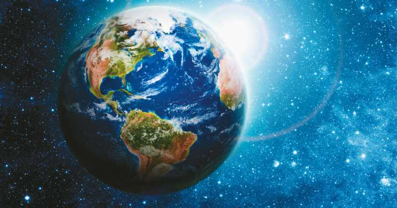

Dia Internacional de la madre Tierra 22 de abril
Realizado por:
Estebasn Samuel Galindo Rodríguez
Cuarto "F"
Especialidad
Programación
Submodulo
Desarrolla Aplicaciones Móviles
Docente
Lic.José Antonio Gómez Hernández
Cuarto "F"
Programación
Desarrolla Aplicaciones Móviles
Lic.José Antonio Gómez Hernández
celebramois el Día Internacional de la Madre Tierra para recordar que el planeta y sus ecosistemas nos dan la vida y el sustento. Con este día, asumimos,además de la responsabilidad colectiva, como nos recordaba la Declaración de Río 1992, de fomentar esta armonia con la naturaleza y la Madre Tierra. Este día nos brinda también la oportunidad de concienciar a todos los hábitantes del planet6a acerca de los problemas que afectan a la Tierra y a las diferentes formas de vida que en el se desarrollan.
En 1968, Morton Hilbert y el U.S. Public Health Service (Servicio de Salud Pública de E.E.U.U.), organizaron el Simposio de Ecología Humana, se realiza una conferencia por los nombrados anteriormente para una asamblea o conferencia medioambiental para que estudiantes escucharan a científicos hablar sobre los efectos del deterioro ambiental en la salud humana.2 Este fue el primer antecedente del Día de la Tierra. Durante los siguientes dos años, Hilbert y sus estudiantes trabajaron para planear el primer Día de la Tierra.3 Surgieron otros esfuerzos como Survival Project (Proyecto para la Supervivencia), uno de los primeros eventos educacionales de conciencia ambiental, que fue llevado a cabo en la Universidad Northwestern el 23 de enero de 1970. Este fue el primero de varios eventos realizados en campus universitarios por todo Estados Unidos. Así mismo, Ralph Nader empezó a hablar acerca de la importancia de la ecología en 1970. La primera manifestación tuvo lugar el 22 de abril de 1970, promovida por el senador y activista ambiental Gaylord Nelson, para la creación de una agencia ambiental. En esta convocatoria participaron dos mil universidades, diez mil escuelas (primarias y secundarias) y centenares de comunidades. La presión social tuvo sus logros y el gobierno de los Estados Unidos creó la Environmental Protection Agency (Agencia de Protección Ambiental) y una serie de leyes destinadas a la protección del medio ambiente.4 En 1972 se celebró la primera conferencia internacional sobre el medio ambiente. La Cumbre de la Tierra de Estocolmo cuyo objetivo fue sensibilizar a los líderes mundiales sobre la magnitud de los problemas ambientales
Madre Tierra es una expresión común utilizada para referirse al Planeta Tierra en diversos países y regiones, lo que demuestra la interdependencia existente entre los seres humanos, las demás especies vivas y el planeta que todos habitamos. La Tierra y sus ecosistemas son nuestro hogar. Para alcanzar un justo equilibrio entre las necesidades económicas, sociales y ambientales de las generaciones presentes y futuras, es necesario promover la armonía con la naturaleza y el planeta. Celebramos el Día Internacional de la Madre Tierra para recordar que el planeta y sus ecosistemas nos dan la vida y el sustento. Con este día, asumimos, además, la responsabilidad colectiva, como nos recordaba la Declaración de Río de 1992, de fomentar esta armonía con la naturaleza y la Madre Tierra. Este día nos brinda también la oportunidad de concienciar a todos los habitantes del planeta acerca de los problemas que afectan a la Tierra y a las diferentes formas de vida que en él se desarrollan.

Celebramos el Día Internacional de la Madre Tierra para recordar que el planeta y sus ecosistemas nos dan la vida y el sustento. Con este día asumimos, además, la responsdabilidad colectiva, como nos recordaba la Declaración de Río de 1992, de fomentar esta armonía con la naturaleza y la Madre Tierra. Este día nos brinda también la oportunidad de concienciar a todos los habitantes del planeta acerca de los problemas que afectan al planeta y las diferentes formas de vida que en él se desarrollan.
La gestión integrada de paisajes requiere comprender los diferentes impactos del uso de la tierra y equilibrar los intereses a menudo contradictorios de los diferentes grupos involucrados. Imaginemos que usted forma parte del gobierno del país X en África subsahariana. Desea cumplir con el Objetivo de Desarrollo Sostenible No. 1 que reza: “acabar con la pobreza en todas sus formas en todas partes". Sin embargo, es consciente de la necesidad de implementar todos los 17 Objetivos, incluido el Objetivo 15, que busca: "Gestionar sosteniblemente los bosques, luchar contra la desertificación, detener e invertir la degradación de las tierras y detener la pérdida de biodiversidad.” Imagine que usted tiene una gran extensión de pastizales secos donde casi nadie vive y quiere explotarlos de mejor manera, en beneficio de su gente. Un gobierno extranjero le ofrece pagar $ x mil millones por un arrendamiento de 30 años de un área de 1.000 kilómetros cuadrados de tierra seca, con al menos una fuente de agua durante todo el año. La tierra será vallada y utilizada para ejercicios militares. Luego se le acerca un consorcio minero internacional que desea tomar un arrendamiento de 30 años para usar y vallar 1.000 kilómetros cuadrados de tierra para la exploración y producción de petróleo. El alquiler por sí solo aportará $ x mil millones, y mucho más si el petróleo comienza a fluir. Al mismo tiempo, un país extranjero adinerado quiere cultivar una gran extensión de tierra y está dispuesto a invertir en tuberías para traer agua de un lago lejano. El plan es cultivar garbanzos usando riego por goteo, creando algunos trabajos locales. Las tres ofertas de proyectos cubren una vasta extensión de tierras aparentemente subutilizadas y el dinero sobre la mesa parece demasiado bueno para ser verdad.